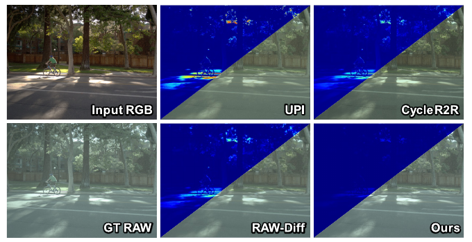
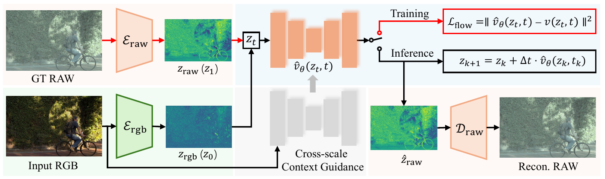
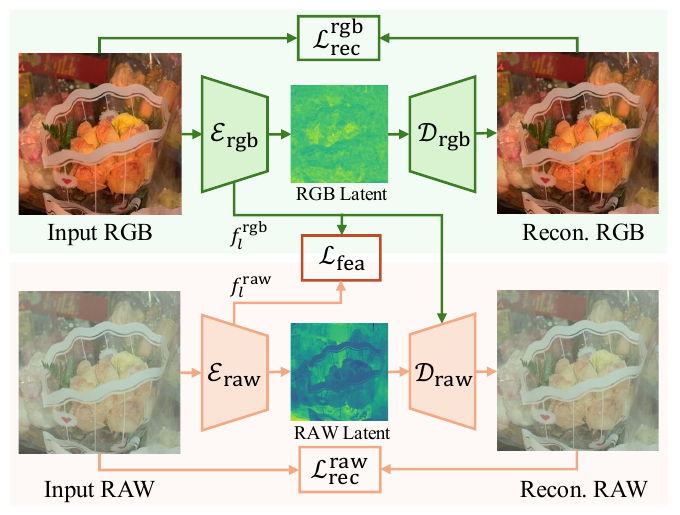
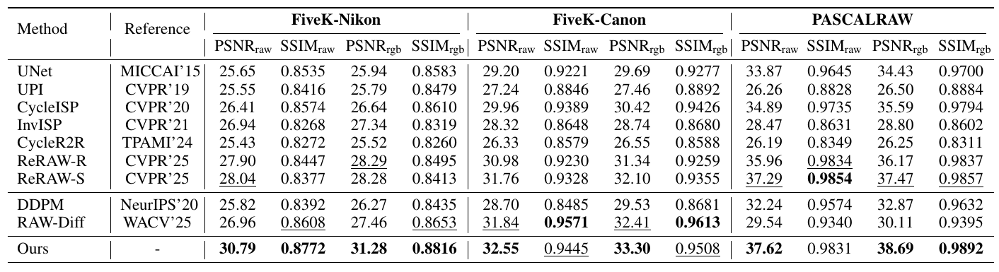
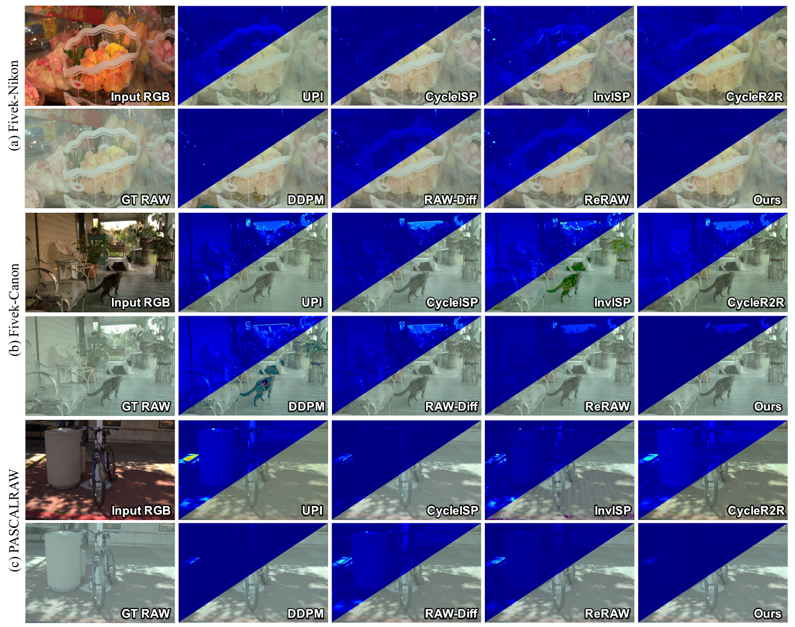
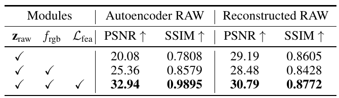
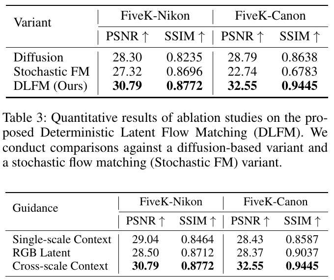
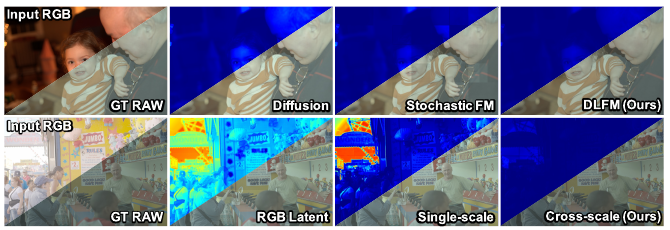

论文
RAW-Flow：把 RGB→RAW 写成 6 通道潜空间里「从 RGB 潜变量出发」的确定性流匹配，每台相机一个模型

代码来源说明：论文首页给出官方仓库 liuzhen03/RAW-Flow，MIT 许可。本页行号对应 commit
ddddedf（2026-06-08），repo/即这份克隆。训练三阶段、评测、数据预处理都在仓库里。三份权重nikon_d700.pth、canon_eos_5d.pth、pascalraw.pth（README 标每份约 350 MB）放在 Google Drive，2026-10-29 查看文件夹列表三个文件都在。README 另给的「预处理好的 FiveK Nikon 数据」文件夹，当天用 Drive 嵌入视图看没有列出任何文件。仓库的数据预处理（同一随机种子 2817、15% 测试、Canon 减 127、3×3 切块）和RGBGuidedResidualBlock/SPADEGroupNorm的结构、命名都与 raw-diffusion-2024 的官方仓库（Apache-2.0）一致，README 没有提到这一来源。
专项定位：本页属于「手机照片 → 相机画质：细节与质感迁移」专项（入口：phone2camera-2026 调研页）。专项已经读过三种「sRGB → RAW」：unprocessing-2018 手写逆 ISP 加噪声模型，raw-diffusion-2024 像素空间条件扩散，rawgen-2026 用 FLUX.1-Kontext 生成 XYZ 再经 DNG 矩阵落到任意相机。前两篇学习式方法的结论是「生成的是干净 RAW，纹理来自输入照片，只能当颜色/色调逆 ISP」。本页要回答 RAW-Flow 换成潜空间确定性流匹配之后，这个结论变没变。
潜空间
RGB、RAW 各一个小卷积自编码器，潜变量都是 1/8 RGB 分辨率、6 通道、过 sigmoid。RAW 解码器同时接 RGB 编码器的 1/2、1/4 两路跳连特征（§2.2）。
确定性流
起点是 RGB 潜变量，终点是 RAW 潜变量，直线插值，回归恒定速度 z₁ − z₀。推理 20 步欧拉积分，全程没有随机数（§2.3）。
条件
速度 U-Net 的每个残差块都用 SPADE 调制。调制特征来自另一个 U-Net，输入是整张图缩成 256×256 的缩略图，不是当前块（§2.4）。
给本专项的结论
RGB 的确定性函数，不带可控噪声、不建模镜头、每台相机单训。纹理经解码器跳连直接来自输入照片。能做的仍是颜色/色调逆 ISP（§6）。
1. 出发点：逆 ISP 的回归方法糊、扩散方法乱
RAW 比 sRGB 更适合做检测、低光增强、超分、去噪，但大规模、按传感器采的 RAW 数据集贵，RAW 文件也占存储。于是有了 RGB-to-RAW 重建：从容易拿到的 RGB 推回某台相机的 RAW（§Introduction）。
论文把已有学习方法分成两类。一类按 ISP 的模块逐段逆，依赖曝光、白平衡等元数据，误差会逐段累积（UPI、CycleR2R、Conde 等）。另一类直接学端到端映射（InvISP、ReRAW、RAW-Diff），不需要元数据，但量化、截断后的 RGB 本来就丢了信息，逆问题是病态的，回归模型会出色偏和模糊的纹理。
扩散模型表达力强，作者认为它不适合这个任务的原因有两条：一是要「通过带噪的中间状态学一个确定的、语义对齐的映射」很难，模型会过度依赖退化的 RGB 引导，Fig. 1 里 RAW-Diff 出现了结构失真；二是扩散通常要几百步去噪，太慢（§Introduction）。
RAW-Flow 的回答是把问题搬到潜空间，用流匹配学一个从 RGB 潜变量直接流到 RAW 潜变量的确定性向量场。论文给出的理由是：「在固定相机和场景下，两个域之间的映射本来就是一对一的」（§DLFM）。这句话是全文的前提，§5 会回来检查它在什么条件下成立。
RGB-to-RAW / 逆 ISP
从相机处理后的 8-bit RGB 推回传感器的线性 RAW。本文每台相机训一个模型，不读元数据。
打包 RGGB
把 Bayer 马赛克每个 2×2 块拆成 R、G₁、G₂、B 四个通道，分辨率减半。本文的 RAW 都是这种 4 通道图。
流匹配 (flow matching)
在两个分布的样本之间定义一条插值路径，让网络回归沿路径的速度；推理时沿速度场解常微分方程，把起点推到终点。
确定性 FM / 随机 FM
随机 FM 的起点是高斯噪声，靠条件把噪声变成数据；本文的确定性 FM 起点直接是配对的 RGB 潜变量，不采任何噪声。
欧拉积分
解微分方程最简单的办法：每一步按当前速度走一小段 Δt。本文 K = 20 步，Δt = 0.05。
SPADE 调制
先做归一化，再用条件特征图逐像素预测缩放 γ 和偏移 β。条件因此能在每一层、每个位置改写主干特征。
DLAE / DLFM
本文的两个模块名：双域潜空间自编码器（Dual-domain Latent Autoencoder）和确定性潜空间流匹配（Deterministic Latent Flow Matching）。
rawpy 默认渲染
raw.postprocess() 不带参数时：不用拍摄白平衡也不做自动白平衡（dcraw 默认是按 D65 色卡定的固定白平衡），按直方图自动定白电平提亮（默认允许 1% 像素过曝），AHD 去马赛克，BT.709 gamma，8-bit sRGB。
PSNRraw / PSNRrgb
前者在 4 通道打包 RAW 上算；后者论文称为「转换后的 RGB」，代码里其实是把两个 G 取平均后的 3 通道线性 RAW，不是 sRGB（§4 第 8 条）。
2. 方法：两个自编码器 + 一条从 RGB 潜变量出发的直线流

2.1 数据：输入是 rawpy 从同一张 RAW 渲出来的全分辨率 RGB
论文只说「所有 RAW 用 RawPy 库处理得到对应的 RGB」（§Experimental Setting）。代码给出了具体做法：
repo/src/data/_processing/fivek_train.py:L92-L111 — rawpy 默认参数渲染；保留全分辨率 RGB（2X）；整张图另存 256² / 128² 缩略图；RAW 按固定位置拆成 RGGB
raw_file = rawpy.imread(raw_path)
rgb_img = raw_file.postprocess()
h, w, c = rgb_img.shape
bayer_image = raw_file.raw_image_visible
rgb_img_2x = rgb_img.astype(np.uint8)
rgb_img_1x = cv2.resize(
rgb_img, (w // 2, h // 2), interpolation=cv2.INTER_AREA
).astype(np.uint8)
context_256 = cv2.resize(rgb_img, (256, 256), interpolation=cv2.INTER_AREA).astype(np.uint8)
context_128 = cv2.resize(rgb_img, (128, 128), interpolation=cv2.INTER_AREA).astype(np.uint8)
r_raw = bayer_image[0::2, 0::2][:, :, np.newaxis]
g1_raw = bayer_image[0::2, 1::2][:, :, np.newaxis]
g2_raw = bayer_image[1::2, 0::2][:, :, np.newaxis]
b_raw = bayer_image[1::2, 1::2][:, :, np.newaxis]
rggb_img = np.concatenate([r_raw, g1_raw, g2_raw, b_raw], axis=-1)
几点要先说清：
- RGB 是同一张 RAW 的 rawpy 默认渲染。 默认参数下没有降噪、没有锐化、没有局部色调映射；白平衡对每台相机是固定的（dcraw 的 D65 色卡白平衡，不是拍摄时的 AsShotNeutral）；亮度按整张图的直方图自动拉伸。所以 RGB 里保留着和 RAW 同一份传感器噪声，只是经过了去马赛克、gamma 和 8-bit 量化。这和 raw-diffusion-2024 的设置相同。
- RGB 用全分辨率（
rgb_size: "2X"），这一点和 RAW-Diffusion 不同。 RAW-Diffusion 把 RGB 面积下采样 2 倍，使它和打包 RAW 同尺寸；RAW-Flow 保留全分辨率，再在编码器入口用pixel_unshuffle把每个 2×2 块折进通道（repo/src/models/DLAE.py:L141-L152）。输入 RGB 的像素数是 RAW-Diffusion 的 4 倍，与 Bayer 网格逐像素对齐。 - 整张图额外存一份 256×256 缩略图，宽高比不保留（FiveK 的 4256×2832 被压成正方形），给 §2.4 的条件网络用。
- 训练块：每张图先切 3×3 块存盘，训练时再从块里随机裁 256×256 的打包 RAW（对应 512×512 的 RGB），加随机翻转和
rot90（repo/src/data/transforms.py:L181-L224）。 - 归一化：RAW 除以写死的白电平（Nikon D700 16383、Canon EOS 5D 4095、PASCALRAW 4095），黑电平记为 0，Canon 在预处理时先减 127 再截到 0（
repo/src/data/camera.py:L12-L16，repo/src/data/_processing/fivek_train.py:L124-L125），最后截到 [0,1] 再映射到 [−1,1]（repo/src/data/patch_dataset.py:L188-L235）。
数据集：FiveK 里 Nikon D700 590 张、Canon EOS 5D 777 张，PASCALRAW（Nikon D3200）取一个子集，都按 85/15 随机划分。代码里 PASCALRAW 的划分文件是 510 / 90 张（repo/data/PASCALRAW_splits/），即 600 张的子集；完整的 PASCALRAW 有 4259 张 12-bit RAW。FiveK 的划分逻辑（按路径排序后 train_test_split(test_size=0.15, random_state=2817)，repo/src/data/_processing/fivek_train.py:L220-L225）和 RAW-Diffusion 的 datasets/fivek_process.py:L184-L187 一样，按代码推断两篇用的是同一批测试图：Nikon 训练 501 张、测试 89 张，Canon 训练 660 张、测试 117 张。
2.2 双域潜空间自编码器：6 通道潜变量 + RGB 跳连

作者发现直接在 RAW 上训自编码器不稳定，像素损失训出来的 RAW 重建「感知上不准」。DLAE 的办法是两个自编码器联合训练，并加一项特征对齐：
—— 翻译: 在选定的几层 S 上，让 RAW 编码器的中间特征尽量等于 RGB 编码器同一层的特征。同一个场景的两种编码在浅层应该长得差不多，深层再各自保留域特有的信息。
—— 翻译: 两个自编码器都用「像素 L2 + VGG 感知损失」重建自己的输入；RAW 那一支再加上特征对齐项。λ₁ = 0.01，λ₂ = 0.1。
结构上，编码器是两级残差块 + 两次步长 2 的下采样，最后用 channel_down 压成 6 通道并过 sigmoid（repo/src/models/DLAE.py:L47-L59, L121-L152, L187-L217）。以 512×512 的 RGB 块为例：pixel_unshuffle 后是 256×256×12，第一次下采样得到 128×128×192 的 fea2，第二次得到 64×64×384 的 fea4，再压成 64×64×6 的潜变量。RAW 编码器从 256×256×4 出发，形状一样。
关键在 RAW 那一支的前向：
repo/src/models/DLAE.py:L304-L332 — RAW 自编码器：对齐损失作用在 fea2 和 fea4 上；解码时用的是 RGB 编码器的 fea2 / fea4，RAW 编码器自己的中间特征只参与对齐
def forward(self, x, target=None, rgb_features=None, rgb_latent=None):
output = {}
latent, raw_fea2, raw_fea4 = self.encode(x)
output['latent'] = latent
output['raw_fea2'] = raw_fea2
output['raw_fea4'] = raw_fea4
feature_loss = 0.0
if rgb_features is not None:
rgb_fea2, rgb_fea4 = rgb_features
fea2_loss = self.l2_loss(rgb_fea2, raw_fea2)
fea4_loss = self.l2_loss(rgb_fea4, raw_fea4)
feature_loss = fea2_loss + fea4_loss
output['fea2_loss'] = fea2_loss
output['fea4_loss'] = fea4_loss
output['feature_loss'] = feature_loss
if rgb_features is not None:
rgb_fea2, rgb_fea4 = rgb_features
recon_img = self.decode(latent, rgb_fea2, rgb_fea4)
output['use_rgb_features'] = True
output['recon_img'] = recon_img
RAW 解码器把 fea4 加到潜变量上采样后的 64×64 特征上、把 fea2 加到 128×128 特征上，末层 tanh（repo/src/models/DLAE.py:L238-L250）。第一阶段训练时，这两路 RGB 特征在 torch.no_grad() 下由 RGB 编码器算出再喂给 RAW 自编码器（repo/scripts/train_stage1_ae.py:L43-L55），推理时同样从 RGB 编码器拿（repo/src/models/rawflow.py:L75-L95）。
算一下各条通路的信息量：一个 256×256 的打包 RAW 块有 26.2 万个数；潜变量 64×64×6 只有 2.5 万个；而 RGB 跳连 fea2 + fea4 合计 128²×192 + 64²×384 ≈ 472 万个数，是潜变量的 190 倍。所以「RAW 潜变量」在这里是一个很窄的瓶颈，解码器的空间细节主要由 RGB 跳连提供。这和 ispdiffuser-2025 §6 第 3 条说的「跳连泄漏」是同一种结构，那篇也出自刘帅成组（姜海、刘帅成为两篇共同作者）。论文正文提到「RGB 编码器的浅层特征注入 RAW 解码器的对应层」，但图 2 的推理路径没有画出来，也没有讨论这条旁路的容量。
2.3 确定性潜空间流匹配：起点就是 RGB 潜变量
常见的（随机）流匹配从高斯噪声出发：
—— 翻译: 在噪声 ε 和数据 z₁ 之间画一条直线，t 从 0 走到 1 就从噪声走到数据。条件只能通过网络输入告诉它「该走到哪个数据」。
RAW-Flow 把起点换成配对的 RGB 潜变量：
—— 翻译: 直线的两端都是同一个场景的编码，一端是 RGB 的，一端是 RAW 的。路径上的点不含任何随机性。
—— 翻译: 网络看到路径上的某个点和时间 t，要猜出这条直线的方向和长度 z₁ − z₀。直线上处处速度相同，所以目标对每个 t 都一样。
—— 翻译: 推理时从 RGB 潜变量出发，每步按预测的速度走 1/20，走 20 步就到了 RAW 潜变量 ẑraw，再交给 RAW 解码器。
一个数值例子：某个潜变量元素在 RGB 端是 0.30、RAW 端是 0.50，目标速度就是 0.20。如果网络在每个 t 都准确输出 0.20，20 步每步走 0.01，正好到 0.50；其实一步走 0.20 也一样到。这说明了一件事：配对、一对一、直线插值时，理想的速度场沿每条路径是常数，一步欧拉就等价于在潜空间做残差回归 z₁ ≈ z₀ + v̂(z₀, 0)。多走几步的价值在于网络预测不准时可以逐步修正。论文没有报告 K 的消融，所以我们不知道 20 步比 1 步多出多少。
代码与 Eq. 3–5 逐项对得上：
repo/src/models/DLFM.py:L24-L50 — 训练：起点取 RGB 潜变量（mode='rgb_latent'），直线插值，MSE 回归速度 x₁ − x₀；条件网络的输入优先用 context
def compute_loss(self, x_1, t, rgb_latent, context=None, coordinates=None):
cond_input = context if self.use_context and context is not None else rgb_latent
cond_output, cond_features = self.cond_unet(cond_input, coordinates)
if self.mode == 'noise':
x_0 = torch.randn_like(x_1)
elif self.mode == 'rgb_latent':
x_0 = rgb_latent
t = t[:, None, None, None]
x_t = (1 - t) * x_0 + t * x_1
target_velocity = x_1 - x_0
predicted_velocity = self.model(x_t, t.squeeze(-1).squeeze(-1).squeeze(-1), cond_features)
fm_loss = F.mse_loss(predicted_velocity, target_velocity)
if self.use_cond_loss and cond_output is not None:
cond_loss = F.mse_loss(cond_output, x_1)
else:
cond_loss = torch.tensor(0.0, device=fm_loss.device)
return fm_loss, cond_loss
repo/src/models/DLFM.py:L52-L78 — 推理：条件特征只算一次；从 RGB 潜变量出发，t ∈ {0, 0.05, …, 0.95} 做 20 步欧拉
def sample_ode(self, shape, rgb_latent, num_steps=50, context=None, coordinates=None):
device = next(self.model.parameters()).device
cond_input = context if self.use_context and context is not None else rgb_latent
cond_output, cond_features = self.cond_unet(cond_input, coordinates)
if self.mode == 'noise':
x_t = torch.randn(shape, device=device)
elif self.mode == 'rgb_latent':
x_t = rgb_latent
dt = 1.0 / num_steps
t_values = torch.linspace(0, 1, num_steps + 1, device=device)[:-1]
for i in range(num_steps):
t = t_values[i].expand(shape[0]).float()
velocity = self.model(x_t, t, cond_features)
x_t = x_t + dt * velocity
if torch.isnan(x_t).any() or torch.isinf(x_t).any():
print(f"Warning: NaN or Inf detected at step {i}")
break
return x_t, cond_output
num_steps 的默认值 50 在发布配置里被覆盖成 20（repo/configs/stage2_flow/fivek_nikon.yaml:L37，repo/src/models/rawflow_wrapper.py:L104）。cond_loss 和 FusionModule（一个交叉注意力融合块，repo/src/models/fusion.py:L44-L82）在所有发布配置里都关着，论文也没有提到它们。
2.4 跨尺度上下文引导：其实是整张图的缩略图
论文的描述（Eq. 6）：先用几个残差块抽取输入 RGB 的特征，再经一个 U-Net 编码器得到多尺度特征 {firgb}，逐尺度注入流匹配 U-Net 的对应层，「每个尺度的特征为对应层提供空间对齐的引导」。
—— 翻译: 速度网络除了看当前点 zt 和时间 t，还在每个分辨率上看一份 RGB 特征，用它来判断该往哪个方向推。
注入方式和 RAW-Diffusion 一样是 SPADE：速度 U-Net 的每个残差块都是 RGBGuidedResidualBlock，归一化后用条件特征逐位置预测 γ、β：
repo/src/models/dual_unet.py:L38-L57 — SPADEGroupNorm：条件特征尺寸不符时最近邻插值，再逐像素预测 γ / β
class SPADEGroupNorm(nn.Module):
def __init__(self, norm_nc, label_nc, normalization_fn, eps=1e-5):
super().__init__()
self.norm = normalization_fn(norm_nc)
self.mlp_shared = nn.Sequential(
nn.Conv2d(label_nc, 128, kernel_size=3, padding=1),
nn.ReLU()
)
self.mlp_gamma = nn.Conv2d(128, norm_nc, kernel_size=3, padding=1)
self.mlp_beta = nn.Conv2d(128, norm_nc, kernel_size=3, padding=1)
self.eps = eps
def forward(self, x, cond):
x = self.norm(x)
if cond.shape[2:] != x.shape[2:]:
cond = F.interpolate(cond, size=x.shape[2:], mode="nearest")
actv = self.mlp_shared(cond)
gamma = self.mlp_gamma(actv)
beta = self.mlp_beta(actv)
return x * (1 + gamma) + beta
和 RAW-Diffusion 的同名模块相比（该仓库 rawdiffusion/models/layer.py:L122-L145），这里的 GroupNorm 带仿射参数、卷积换成普通 Conv2d、插值从双线性改成最近邻，骨架相同。
但条件特征的来源和论文描述不一样。DLFM.py:L26 写的是 cond_input = context if self.use_context ... else rgb_latent，而第二、三阶段和推理配置都设 use_context: 256（repo/configs/stage2_flow/fivek_nikon.yaml:L9，repo/configs/stage3_finetune/fivek_nikon.yaml:L9）。context 是 §2.1 里那张整图缩略图。评测包装器也是先把整张图缩成 256×256，再切块：
repo/src/models/rawflow_wrapper.py:L283-L298 — 推理：整张 RGB 缩成 256² 当 context，原图切成 512² 的块逐块推理，最后按位置拼回
def forward(self, rgb_img):
if rgb_img.dim() == 4 and rgb_img.shape[0] == 1:
rgb_img = rgb_img.squeeze(0)
if rgb_img.device != self.device:
rgb_img = rgb_img.to(self.device)
context_rgb = self._resize_context_rgb(rgb_img)
rgb_patches, positions = self._split_image_into_patches(rgb_img, self.patch_size, self.overlap)
rgb_patches_norm = self.normalize_input(rgb_patches)
context_rgb_norm = self.normalize_input(context_rgb)
raw_patches_norm = self._process_patches(rgb_patches_norm, context_rgb_norm)
raw_patches = self.denormalize_output(raw_patches_norm)
raw_output_shape = (4, rgb_img.shape[1] // 2, rgb_img.shape[2] // 2)
return self._stitch_patches(raw_patches, positions, raw_output_shape)
缩略图先经两层步长 2 的卷积变成 64×64×6（repo/src/models/dual_unet.py:L345-L355），再过一个带注意力的完整 U-Net（编码器、中间层、解码器都有），输出 64、32、16、16、16、32、64 七个尺度的特征（repo/src/models/dual_unet.py:L569-L647），一一对应速度 U-Net 的七组残差块（repo/src/models/dual_unet.py:L921-L973）。
这带来一个几何上的错位：速度 U-Net 处理的是当前 512×512 块的 64×64 潜变量，SPADE 却按位置用「整张图 64×64 缩略特征」去调制它。块内位置 (i, j) 拿到的是整张图位置 (i, j) 的特征，和块的内容并不对应；代码里有坐标嵌入（CoordAwareResidualBlock）可以告诉网络当前块在哪，但配置里 use_coordinate: false。所以这个模块实际提供的是图像级的全局信息（整体亮度、色调、场景类别），而不是「空间对齐的引导」。论文消融（表 4）把对照组写作「single-scale global context」，可见作者知道它是全局的；方法一节的描述则容易让人以为它看的是当前块。当前块自己的内容只通过两条路进模型：起点 z₀，和解码器的 RGB 跳连。
2.5 三阶段训练：最后一段把流当成展开的回归网络
论文写的是两阶段加一段端到端微调：先训 DLAE（200 epoch），再冻结 DLAE 训 DLFM（100 epoch），最后受 REPA-E 启发把整个框架端到端微调，损失为
—— 翻译: 端到端阶段不再看速度，直接比较最终解码出的 RAW 和真值 RAW：像素 L1 加一点 VGG 感知损失。
发布代码的第三阶段损失多了两项：
repo/src/models/rawflow.py:L98-L123 — 端到端损失：L1 + L2 + logL1 + 0.01·VGG；hard_log_loss 算了但没有用
if raw_target is not None:
l1_loss = self.l1_loss(pred_raw_img, raw_target)
outputs['l1_loss'] = l1_loss
l2_loss = self.l2_loss(pred_raw_img, raw_target)
outputs['l2_loss'] = l2_loss
eps = 1e-8
log_pred = torch.log(torch.clamp((pred_raw_img + 1) / 2, min=eps))
log_target = torch.log(torch.clamp((raw_target + 1) / 2, min=eps))
log_l1_loss = F.l1_loss(log_pred, log_target)
outputs['log_l1_loss'] = log_l1_loss
raw_hard_log_loss = self.hard_log_criterion((pred_raw_img + 1) / 2, (raw_target + 1) / 2)
if pred_raw_img.shape[1] == 4:
pred_rgb = rggb_to_rgb(pred_raw_img)
target_rgb = rggb_to_rgb(raw_target)
perceptual_loss = self.perceptual_loss(pred_rgb, target_rgb)
else:
perceptual_loss = self.perceptual_loss(pred_raw_img, raw_target)
outputs['perceptual_loss'] = perceptual_loss
total_loss = l1_loss + l2_loss + log_l1_loss + 0.01 * perceptual_loss
outputs['total_loss'] = total_loss
「L1 + L2 + 对数 L1」正是 RAW-Diffusion 的三项像素损失组合（见该页 §2.5）。这一阶段的前向会把 20 步欧拉积分完整展开并反传（repo/src/models/rawflow.py:L75-L95），RAW 编码器不再参与，流匹配目标 Eq. 4 也不再出现。也就是说，最终发布的模型是「RGB 编码器 → 20 次共享权重的 U-Net 迭代 → RAW 解码器」，用像素损失端到端训出来的确定性网络。前两阶段的流匹配起的是初始化作用。
按发布配置推算训练量（FiveK Nikon，501 张训练图 × 9 块 = 4509 个样本/epoch）：第一阶段 300 epoch、batch 8，约 17 万步；第二阶段 200 epoch、batch 8，约 11 万步；第三阶段 100 epoch、batch 1、学习率 4e-6，约 45 万步，每步展开 20 次 U-Net（repo/configs/stage1_ae/fivek_nikon.yaml:L15-L17，repo/configs/stage2_flow/fivek_nikon.yaml:L15-L17，repo/configs/stage3_finetune/fivek_nikon.yaml:L15-L17）。论文只写了 DLAE 200 epoch、DLFM 100 epoch、RTX 4090，没有报告第三阶段的 epoch、训练时长、参数量和推理耗时。
2.6 与 RAW-Diffusion 的设计取舍
| 维度 | raw-diffusion-2024 | RAW-Flow | 取舍 |
|---|---|---|---|
| 生成空间 | 像素空间（打包 RGGB） | 6 通道潜空间（1/8 RGB 分辨率），外加 RGB 跳连 | 潜空间让速度网络在 64×64 上做全局注意力；代价是需要先训自编码器，且细节依赖跳连 |
| 起点 | 高斯噪声，x₀ 预测 | RGB 潜变量，直线到 RAW 潜变量 | 起点就带着答案的大部分，网络只需学残差方向 |
| 随机性 | 有初始噪声，但 DDIM 2 步≈1000 步，几乎确定 | 完全没有 | 两者在 PSNR 目标下都退化成条件回归；RAW-Flow 把这一点做成了设计 |
| 输入 RGB 分辨率 | 面积下采样 2×，与打包 RAW 同尺寸 | 全分辨率，pixel_unshuffle 折进通道 | RAW-Flow 能看到每个 Bayer 位置对应的 RGB 像素，这本身就可能贡献部分 PSNR |
| 条件注入 | EDSR 抽当前块特征，SPADE 注入瓶颈和解码器 | 整图缩略图经 U-Net，SPADE 注入速度网络全部层；当前块信息走 z₀ 和解码器跳连 | RAW-Flow 多了图像级全局信息，RAW-Diffusion 每块独立推理 |
| 步数 | DDIM 6–24 步（6 步无损） | 欧拉 20 步，未消融 | 论文说扩散「通常需要几百步」，但 RAW-Diffusion 实际只用 6–24 步，速度优势并不成立 |
| 损失 | MSE + L1 + logL1，乘 P2 权重 | 三阶段：AE 的 L2 + VGG + 对齐；FM 的速度 MSE；端到端 L1 + L2 + logL1 + VGG | RAW-Flow 端到端阶段沿用了 RAW-Diffusion 的像素损失组合 |
| 训练流程 | 一阶段 | 三阶段，第三阶段展开 20 步反传 | 更复杂，复现成本更高 |
| 每台相机的数据量 | 论文表 2：25 张即与全量持平 | 只用全量训练（501–660 张），没有少样本实验 | 换新相机要多少数据，RAW-Flow 没给证据 |
3. 结论：作者重跑的表里三个数据集都是第一
3.1 主表

RAW 域 PSNR，以及本文相对几个代表性基线的差值：
| 数据集 | 本文 | RAW-Diff | ReRAW-S | CycleISP | InvISP | UPI |
|---|---|---|---|---|---|---|
| FiveK-Nikon | 30.79 | 26.96（+3.83） | 28.04（+2.75） | 26.41（+4.38） | 26.94（+3.85） | 25.55（+5.24） |
| FiveK-Canon | 32.55 | 31.84（+0.71） | 31.76（+0.79） | 29.96（+2.59） | 28.32（+4.23） | 27.24（+5.31） |
| PASCALRAW | 37.62 | 29.54（+8.08） | 37.29（+0.33） | 34.89（+2.73） | 28.47（+9.15） | 26.26（+11.36） |
- Nikon 上领先最明显：比第二名 ReRAW 高 2.75 dB（RAW 域），RGB 列高约 3 dB。
- Canon 和 PASCALRAW 上 PSNR 领先不到 1 dB，SSIM 并不是最好的：Canon 的 SSIMraw 是 RAW-Diff 最高（0.9571 vs 本文 0.9445），PASCALRAW 的 SSIMraw 是 ReRAW-S 最高（0.9854 vs 0.9831）。
- 表里有一处很可疑：PASCALRAW 上 RAW-Diff 只有 29.54，比最朴素的 UNet（33.87）还低 4.3 dB，也比它自己在 FiveK-Canon 上的表现差得多。论文没有解释，可能是这个基线在 PASCALRAW 上没有调好。
- 每个数字都是单次结果，没有种子方差。
3.2 跨论文对照：同一批测试图，RAW-Diff 的数字差了 1.6–2.6 dB
两篇 FiveK 的划分代码相同（§2.1），可以把 RAW-Diffusion 论文自报的数字拿来对照。RAW-Diffusion 的指标是 G 取平均后的 3 通道 PSNR，对应本文的 PSNRrgb 列；它按 3×3 切块评估、3 个种子取均值，本文按整图评估。
| 方法 | 数据集 | RAW-Diffusion 论文自报 | RAW-Flow 表 1（PSNRrgb） | 差 |
|---|---|---|---|---|
| RAW-Diff | FiveK-Nikon | 30.05 | 27.46 | −2.59 |
| RAW-Diff | FiveK-Canon | 34.01 | 32.41 | −1.60 |
| UPI | FiveK-Nikon | 27.66 | 25.79 | −1.87 |
| UPI | FiveK-Canon | 30.68 | 27.46 | −3.22 |
| 本文 | FiveK-Nikon | — | 31.28 | 比 RAW-Diff 自报高 1.23 |
| 本文 | FiveK-Canon | — | 33.30 | 比 RAW-Diff 自报低 0.71 |
同一方法在两篇论文里差 1.6–3.2 dB，说明评测口径（整图还是切块、黑电平处理、RGB 分辨率、是否截断）对绝对值影响很大，跨论文比数字不可靠。按各自口径看，RAW-Flow 在 Nikon 上可能确实更好，在 Canon 上则未必超过 RAW-Diffusion。两篇方法的排序在 RAW-Flow 的表里是统一重跑得出的，这是它的主要证据，但重跑设置（RAW-Diff 用了半分辨率 RGB 还是全分辨率、如何整图拼接）论文没有交代。
3.3 定性结果

3.4 消融决策表



| 组件 | 起点 | 消融方向 | 最终选择 | 为什么 |
|---|---|---|---|---|
| RAW 解码器的输入 | 只用 zraw | + RGB 跳连 frgb；+ ℒfea | 两者都加 | 自编码器重建 20.08 → 25.36 → 32.94。6 通道潜变量单独装不下 RAW 的细节，跳连补上了；对齐损失让 RAW 编码器的潜变量更「像 RGB」，和 RGB 跳连配得更好。但系统最终 PSNR 是 29.19 → 28.48 → 30.79，只加跳连反而掉了 0.71 dB，且只用 zraw 的最终结果（29.19）比它自己的自编码器上限（20.08）高 9 dB，说明第三阶段重训了解码器，自编码器质量并不构成上限，这张表很难归因 |
| 流的起点 | 高斯噪声（随机 FM） | 改为 RGB 潜变量 | RGB 潜变量 | 30.79 / 32.55 vs 27.32 / 22.74。按发布代码的 noise 模式推断，随机 FM 变体的速度网络只看得到整图缩略图的条件，看不到当前块，当前块信息只剩解码器跳连，所以 Canon 上掉到 22.74。这个差距一部分来自「起点带不带当前块信息」，不全是「确定性 vs 随机」（推断，论文没写随机 FM 变体的条件配置） |
| 生成框架 | 扩散 | 改为确定性 FM | 确定性 FM | 30.79 / 32.55 vs 28.30 / 28.79。论文没说扩散变体用多少步、预测什么目标、是否也在潜空间。和 RAW-Diffusion 自报的数字（30.05 / 34.01）相比，这个「扩散」基线明显偏弱 |
| 条件来源 | RGB 潜变量（与当前块对齐） | 单尺度全局上下文；跨尺度全局上下文 | 跨尺度（整图缩略图 + U-Net） | 28.50 / 28.37 → 29.04 / 28.43 → 30.79 / 32.55。与块对齐的局部条件最差，全局缩略图最好。一个合理的解释是 rawpy 默认的亮度拉伸按整张图直方图决定，单看一个块推不出这个缩放系数，必须看全图（推断） |
| 采样步数 K | — | 未消融 | 20 | 论文没有给 K 的消融。§2.3 指出理想情况下一步就够，20 步的必要性没有被证明 |
4. 实现细节与「论文 vs 代码」核对
- 跨尺度上下文的输入是整张图的 256² 缩略图，不是当前块。
cond_input = context if self.use_context ...（repo/src/models/DLFM.py:L26, L55），配置use_context: 256（repo/configs/stage2_flow/fivek_nikon.yaml:L9），缩略图由预处理直接把整图 resize 成正方形（repo/src/data/_processing/fivek_train.py:L104），推理时由包装器现算（repo/src/models/rawflow_wrapper.py:L205-L221）。坐标嵌入存在但关闭。论文方法一节写的是「空间对齐的引导」，与代码不符。 - 训练和推理的缩略图做法不同。 训练用
cv2.resize(..., INTER_AREA)在 uint8 上缩，推理用F.interpolate(..., mode='bilinear', align_corners=False)在浮点全分辨率图上缩、没有抗混叠（repo/src/models/rawflow_wrapper.py:L214-L219）。从 4000 多像素宽缩到 256 时，双线性不抗混叠会有明显混叠，条件分布存在训练/测试偏差。 - RAW 解码器永远吃 RGB 跳连，6 通道潜变量只是窄瓶颈。 解码器把 RGB 编码器的
fea4（64²×384）和fea2（128²×192）逐层相加（repo/src/models/DLAE.py:L238-L250），推理同样如此（repo/src/models/rawflow.py:L95）。RawAE.forward在rgb_features is None时根本没有给recon_img赋值，会抛UnboundLocalError（repo/src/models/DLAE.py:L326-L332），所以表 2 第一行「只用 zraw」的配置用发布代码复现不了。 - ℒfea 对齐的是
fea2和fea4（repo/src/models/DLAE.py:L314-L324）。fea4是压缩成潜变量前最深的一层特征，和论文说的「浅层」不一致。RGB 特征在no_grad下计算（repo/scripts/train_stage1_ae.py:L43-L44），对齐只拉 RAW 编码器。 - 端到端损失多了 L2 和 logL1。 代码是 L1 + L2 + logL1 + 0.01·VGG（
repo/src/models/rawflow.py:L122），论文 Eq. 9 只有 L1 + λ₃·VGG。VGG 感知损失在代码里是 VGG19 五个块特征的 L1，输入先缩到 224×224（repo/src/models/DLAE.py:L74-L119），论文写的是平方 L2。RAW 的感知损失在 G 取平均后的线性 RAW 上算，没有 gamma。hard_log_loss算了但没进总损失（repo/src/models/rawflow.py:L112）。 - 训练轮数、调度器与论文不符。 配置是第一阶段 300、第二阶段 200、第三阶段 100 epoch（
repo/configs/stage1_ae/fivek_nikon.yaml:L15，repo/configs/stage2_flow/fivek_nikon.yaml:L15，repo/configs/stage3_finetune/fivek_nikon.yaml:L15），论文写 DLAE 200、DLFM 100。论文说学习率用 Reduce-on-Plateau 衰减，整个仓库里没有任何学习率调度器；第一阶段配置里的patience: 5没有被读取使用。 - 验证集就是测试集，checkpoint 按测试 PSNR 选。 三个阶段的
file_list_val都指向*_test.txt（如repo/configs/stage1_ae/fivek_nikon.yaml:L6），训练器每个 epoch 在它上面算 PSNR，最好的存成best_model.pth（repo/src/engine/trainer.py:L164-L168, L198-L220，repo/src/engine/checkpoint.py:L6-L13）。第二阶段加载第一阶段的best_model.pth，第三阶段却加载两个阶段最后一个 epoch 的checkpoint.pth（repo/configs/stage2_flow/fivek_nikon.yaml:L27，repo/configs/stage3_finetune/fivek_nikon.yaml:L27-L28），两段用的自编码器权重可能不是同一份。加载一律strict=False，键名对不上时会静默跳过。 - 「RGB 域」指标不是 sRGB。 评测时
rgb一栏是rggb_to_rgb（R、(G₁+G₂)/2、B）后的线性 3 通道图（repo/scripts/evaluate.py:L128-L133，repo/src/models/utils.py:L12-L20）。论文表 1 的说明写的是「对应的转换后 RGB 输出」，读者容易以为是渲染后的图像。PSNRrgb 普遍比 PSNRraw 高 0.1–1.1 dB，主要是两个 G 平均掉了一部分误差。 - 数据渲染、CFA、电平全部写死。 RGB 用 rawpy 默认参数（
repo/src/data/_processing/fivek_train.py:L94），论文只说「用 RawPy 处理」。[0::2, 0::2]固定当 R（L107-L111），三台相机的白电平写死、黑电平记 0（repo/src/data/camera.py:L12-L16），截断到 [0,1]（repo/src/data/patch_dataset.py:L229）。Canon 先减 127 再截到 0，黑电平以下的读出噪声被截掉。换新相机要改代码，不能读 DNG 元数据。 - 增强打乱 Bayer 相位。 随机翻转和
rot90直接作用在打包 RGGB 上，不交换通道（repo/src/data/transforms.py:L60-L66, L92-L98），和 RAW-Diffusion 的问题一样（见该页 §4 第 7 条）。全分辨率 RGB 按像素翻转，打包 RAW 的四个通道却保持原名，两者的亚像素对应关系在增强后不再一致。 - 整图推理靠切块直接覆盖拼接。 512×512 的块、16 像素重叠，后写的块覆盖先写的，没有加权融合（
repo/configs/eval/fivek_nikon.yaml:L13-L14，repo/src/models/rawflow_wrapper.py:L133-L203）。每块要跑 20 次速度 U-Net，一张 4256×2832 的 FiveK 图按这个规则切成 54 块，即一千多次 U-Net 前向，论文没有报告耗时。 - 代码来自 RAW-Diffusion。 FiveK 预处理的种子、比例、Canon 减 127、3×3 切块（对照 RAW-Diffusion 仓库
datasets/fivek_process.py:L32, L120, L184-L187）和 SPADE 残差块都一致，第三阶段的像素损失组合也相同。README 没有致谢或注明来源。
论文中能对上号的部分：Eq. 3 的直线插值与 Eq. 4 的速度 MSE（repo/src/models/DLFM.py:L37-L43）、Eq. 5 的欧拉积分与 K = 20（L67-L73）、λ₁ = 0.01、λ₂ = 0.1（repo/configs/stage1_ae/fivek_nikon.yaml:L34-L36）、第二阶段冻结 DLAE（repo/scripts/train_stage2_flow.py:L32-L47）、Adam、初始学习率 1e-4。
5. 批判性总结
Strengths
- 把「起点就是条件」的流匹配用在逆 ISP 上，而且代码、配置、三台相机的权重都公开了。 推理过程完全确定，同一张 RGB 每次得到同一份 RAW，便于复现和下游对比。
- 在作者统一重跑的基准上，三个数据集的 PSNR 都是第一，FiveK-Nikon 上领先 2.75 dB。
- 表 4 给出了一个有用的发现：图像级全局信息对逆 ISP 很重要。 整图缩略图当条件比与块对齐的 RGB 潜变量高 2.3–4.2 dB。这对所有「切块推理」的逆 ISP 都有借鉴意义（§6 卡片 3）。
- 用全分辨率 RGB 当输入，pixel_unshuffle 后与 Bayer 网格逐像素对齐，比把 RGB 下采样到打包 RAW 尺寸保留了更多信息。
Limitations / open questions
- 「一对一映射」的前提只在这个基准里成立。 训练和测试 RGB 都是 rawpy 默认参数从同一张 RAW 渲染的：无降噪、无锐化、固定白平衡，RGB 里留着和 RAW 同一份噪声。这时 RGB → RAW 确实几乎是一对一的（只差量化和截断），确定性模型占优在意料之中。换成相机 JPEG、手机 HEIC（自动白平衡、局部色调映射、多帧降噪、锐化），同一张 RGB 对应的 RAW 是一个分布，论文的立论就不成立了，而这类输入完全没有测试。
- 「生成式」名不副实。 没有任何随机采样，第三阶段又用像素损失把 20 步展开端到端训练，最终模型是一个迭代式确定性回归网络。论文没有和「同样结构、一步回归」的基线比，也没有 K 的消融，无法区分收益来自流匹配，还是来自全分辨率输入、全局缩略图和 RGB 跳连这些非流匹配的设计。
- 方法描述和代码有实质出入：条件网络的输入、解码器的 RGB 跳连容量、端到端损失、训练轮数、学习率调度（§4）。
- 评测口径问题：checkpoint 在测试集上选；只有 PSNR/SSIM，没有噪声水平函数、功率谱这类反映 RAW 统计的指标；单次结果无方差；基线数字与原论文差 1.6–3.2 dB，PASCALRAW 上 RAW-Diff 低于 UNet，重跑设置不透明。
- 没有下游验证。 论文开头用检测、低光、超分、去噪来说明 RAW 的价值，但没有做任何「用生成的 RAW 训练下游模型」的实验。RAW-Diffusion 做了检测下游，ReRAW 的标题本身就面向检测。
- 每台相机单独训练，没有少样本或跨相机实验；推理成本（每 512 块 20 次 U-Net）和参数量都没报告。
- 消融只在 FiveK 上，表 2 只有 Nikon，且第三阶段重训让自编码器的贡献难以归因。
When to use / not use
- 适合：手上有某台相机足够多的 (RAW, 同一条已知渲染管线的 RGB) 对，需要一个确定性、可复现、颜色和色调准确的逆映射，把这条渲染管线输出的图逆回这台相机的线性 RAW；或者需要一个比 RAW-Diffusion 推理更稳定（无随机性）的基线。
- 不适合：输入是相机 JPEG、手机成片或网络图片这类渲染管线未知的图（用 rawgen-2026 的多对一思路更对路）；需要可控传感器噪声的数据合成（去噪、暗光）；需要目标相机真实光学质感的任务（超分、细节迁移）；需要「一个模型覆盖多台相机」的场景。
延伸阅读：与相似工作的交叉验证
| 工作 | 核心结论 | 关键观察 | 与本文的异 / 同 |
|---|---|---|---|
| 本文 | 潜空间确定性流匹配 + 全局缩略图条件，RGB→RAW 重建 PSNR 第一 | 局部对齐条件不如全局缩略图；随机 FM、扩散变体都更差；RAW 解码器靠 RGB 跳连 | — |
| raw-diffusion-2024 | 像素空间条件扩散，25 张图即可学会一台相机的逆 ISP | DDIM 2 步≈1000 步，扩散几乎退化成回归；没有噪声建模，纹理来自输入 RGB | 同：同一套数据管线（代码直接复用）、同样的 SPADE 注入和像素损失、同样每台相机一个模型、同样不建模噪声和镜头。异：RAW-Flow 把「几乎确定」变成「完全确定」，加了全局缩略图和全分辨率输入；RAW-Diffusion 做了少样本和检测下游，RAW-Flow 没做 |
| rawgen-2026 | 多对一训练数据（同一锚点配多种修图风格）让逆 ISP 对未知修图稳健，换相机走 DNG 矩阵 | 同骨干只用一对一数据时与 CIE XYZ Net 持平，收益来自数据构造 | 同：都不加噪声，输出是干净 RAW，纹理来自输入照片。异：RawGen 正面处理「同一 RGB 对应多种渲染」的歧义，RAW-Flow 把一对一当前提；RawGen 换相机不重训，RAW-Flow 每台相机重训 |
| unprocessing-2018 | 手写五步逆 ISP + 按 ISO 采样的泊松-高斯噪声，足以训出真实噪声去噪 SOTA | 噪声模型贡献最大 | 同：目标都是「某台相机的 RAW」。异：RAW-Flow 在表 1 上比 UPI 高 5.2–11.4 dB，但完全没有噪声项；Unprocessing 颜色粗，却给出了可控的物理噪声。两者互补 |
| ispdiffuser-2025 | 灰度潜空间扩散补纹理，颜色交给直方图模块（RAW→sRGB 方向） | 解码器从 RAW 编码器接两路高维跳连，「颜色只来自 HCCM」被架空 | 同一个组的工作，出现了同一种结构：潜变量很窄、跳连很宽。两篇都需要警惕「声称的信息通路」和「真实的信息通路」不一致 |
分歧的成因：几篇工作对「生成模型在 RGB→RAW 里起什么作用」的不同答案，根源在输入 RGB 怎么来的。RAW-Diffusion 和 RAW-Flow 的 RGB 是同一张 RAW 经固定参数渲染的，答案几乎唯一，最优解就是条件均值，越确定越好，所以 RAW-Flow 的确定性设计在这个基准上赢。RawGen 面对的是未知修图，答案不唯一，它的收益来自让训练数据覆盖这种歧义。Unprocessing 的下游是去噪，在乎的是噪声统计，所以它干脆用物理模型显式加噪。同一个任务名下，三种评测目标得出三种「最优设计」。
相关工作：ReRAW（Berdan 等，CVPR 2025，本文表 1 最强的回归基线，作者与 RAW-Diffusion 基本重合）用多头集成生成多个 RAW 假设，标题即面向边缘端目标检测；InvISP（Xing 等，CVPR 2021）用可逆网络同时学正逆 ISP；merit-2026（跨相机 RAW→RAW，带传感器噪声损失）；raw-degradation-sr-2026（逐设备实测 PSF 和噪声）。
6. 研究启发：RAW-Flow 能不能成为更好的「颜色/色调逆 ISP」和造数据工具
6.1 专项关心的四个问题
| 问题 | 论文 / 代码给出的事实 | 结论 |
|---|---|---|
| 生成的 RAW 带不带传感器噪声 | 推理全程无随机数（repo/src/models/DLFM.py:L59-L73，mode='rgb_latent'）；没有 ISO、噪声参数输入；损失全是像素级（L1、L2、logL1、VGG）。训练 RGB 本身带着与 RAW 同一份噪声，网络可以经 RGB 跳连把它「抄」过去 |
输出是给定 RGB 的条件均值。输入 RGB 有多少噪声、什么样的噪声，输出就残留多少，而且不可控。输入是降噪过的手机成片时，输出会比真实 RAW 干净得多。要真实噪声，必须在输出上按目标相机的 (shot, read) 参数显式加噪（unprocessing-2018 Eq. 1–3），并接受输出里还残留着源图的噪声 |
| 是否建模镜头空间特性 | 没有 PSF、OLPF、暗角、色差任何一项；解码器的空间细节主要来自 RGB 编码器的高维跳连（§2.2）；增强还打乱了 Bayer 相位（§4 第 10 条） | 输出的锐度、模糊、光晕全部继承自输入照片，而且比 RAW-Diffusion 更直接：RAW-Diffusion 的 RGB 只经过 4 个残差块的引导模块调制，RAW-Flow 的 RGB 特征直接相加进解码器。不能当作目标相机的质感真值 |
| 能否迁移到新相机，要多少数据 | 每台相机一个模型（三份权重分别对应三台相机）；黑白电平、CFA 写死；训练集 501–660 张，没有少样本实验；三阶段训练，第三阶段每步展开 20 次 U-Net | 不能零样本迁移。换相机要改代码、重跑三阶段。RAW-Diffusion 的表 2 说明这类逆映射几十张图可能就够，但 RAW-Flow 的三阶段结构和更大的模型在 MDRAW 这种百张量级（尼康 Z5 114 张、iPhone 98 张）上会不会过拟合，没有证据，需要自己测 |
| 能否作为更好的颜色/色调逆 ISP | 在 rawpy 默认渲染的基准上，FiveK 两个子集的 PSNR 比 RAW-Diff 高 0.7–3.8 dB（作者重跑口径）；全局缩略图能处理整图级的亮度缩放 | 只在「渲染管线已知且与训练一致」时能。 训练只见过 rawpy 默认渲染，没有像 RawGen 那样随机化白平衡、色调曲线、对比度，遇到机内 JPEG 或修过的图时表现未知。专项里如果要逆的是「自己用固定管线渲染的目标相机图」，它可以替代 RAW-Diffusion；要逆的是网络图片或手机成片，选 RawGen 的思路 |
6.2 造数据：专项内外的用途
| 用途 | 可行性 | 需要补什么 |
|---|---|---|
| 专项：给「iPhone RAW → 目标相机质感」造配对 | 结论与 RAW-Diffusion、RawGen 相同：用它从 sRGB 同时造伪 iPhone RAW 和伪目标相机 RAW，两边纹理都来自同一张输入，只有颜色不同，没有质感差异可学 | 按调研页 §6 第 (5) 步走：真实目标相机 RAW → DNG 矩阵经 XYZ 转到 iPhone 颜色空间 → 实测 iPhone 模糊核卷积、下采样、重新马赛克、加噪。这条路根本不需要 RGB→RAW。RAW-Flow 只在「需要目标相机没拍过的场景、且只用于颜色/色调相关的预训练」时才有位置 |
| RAW 目标检测 / 分割（把带标注的 sRGB 数据集转成某台相机的 RAW） | 最接近可用的场景。RAW-Diffusion 已证明 BDD100K 转 RAW 能提升 NOD 夜间检测，但大部分收益来自「多了 10 万张场景」，转 RAW 只多 2–5 AP | 先在目标相机上训一个模型；推理成本较高（每 512 块 20 次 U-Net），10 万张级的转换要先测速；保留少量真实 RAW 做锚点。RAW-Flow 没做下游，收益要自己验证 |
| RAW 去噪训练数据 | 可以当「干净 RAW 生成器」，前提是源图本身干净 | 源 sRGB 选高质量图并降采样 2–4 倍以稀释原噪声；在输出上按目标相机逐 ISO 的噪声参数加噪；不要指望输出本身带对的噪声 |
| RAW 超分训练数据 | 只能做 LR 端的内容扩充，不能做 HR 真值 | HR 真值仍须来自真实光学（zoom-to-learn-2019、raw-degradation-sr-2026）；如果拿生成 RAW 当 HR，再用实测核退化得到 LR，学到的「细节」是源照片的细节 |
| 暗光增强 / 高 ISO | 不适合 | 没有曝光、ISO 条件，暗部由 logL1 驱动的回归决定，噪声不可控 |
| 学习式 ISP（RAW→sRGB）的训练数据 | 有循环风险 | 生成 RAW 是对 rawpy 默认渲染的逆，用它训 ISP 学回去的是 rawpy 默认渲染；想学目标相机自己的 ISP 必须用真实 (RAW, 机内 JPEG) 对 |
| 「只存 JPEG、需要时恢复 RAW」（论文开头提的存储动机） | 只对训练过的那台相机、那条渲染管线成立 | 高光截断处的信息恢复不出来；真实相机 JPEG 的渲染与 rawpy 不同，需要用机内 JPEG 重新训练并评测 |
6.3 可迁移的套路
1. 条件本身就是答案的近似时，把它当起点而不是当噪声的条件
RGB 潜变量已经包含 RAW 的大部分信息，从它出发只需学一个残差方向，比从高斯噪声出发、靠条件「找回」答案容易得多。专项里「物理颜色对齐后的 iPhone RAW → 目标相机质感」也是这种结构：输入已经很接近输出，生成部分只该学残差。但要记住 §2.3 的结论：配对一对一时，确定性直线流的理想解就是一步残差回归，多步只是给不完美的网络留修正余地。
2. 先查清真实的信息通路，再相信结构图
6 通道潜变量对 190 倍体量的 RGB 跳连，解码器的细节主要来自后者。ISPDiffuser 里出现过同样的问题。专项如果想靠网络结构保证「颜色只来自物理模块、纹理只来自生成模块」，就必须数一数每条通路的通道数，或者干脆在数据流上切断（例如生成模块只接收和输出亮度）。
3. 切块推理的逆 ISP 需要一份整图摘要
表 4 中整图缩略图当条件比与块对齐的局部条件高 2.3–4.2 dB。原因很可能是 rawpy 的亮度拉伸、白平衡这类操作是整图级的，单个块推不出来。任何切块处理的颜色/色调模块（包括专项里的颜色对齐网络、按块运行的 RAW→RAW 模型）都应该额外输入一份整图统计：缩略图、直方图，或 EXIF 里的曝光与白平衡。做法上最好保留宽高比，并加上块坐标。
4. 反直觉点：「确定性赢过随机」是基准决定的，不是方法决定的
测试 RGB 是同一张 RAW 用固定参数渲染的，噪声和细节都还在 RGB 里，答案几乎唯一，任何随机性都只会拉低 PSNR。RAW-Diffusion 的 DDIM 2 步≈1000 步、RAW-Flow 的随机 FM 掉 3–10 dB，说的是同一件事。换成真实相机 JPEG 或手机成片，一张 RGB 对应的 RAW 是一个分布，这时该比的是分布指标（噪声曲线、功率谱、KID），不是 PSNR。专项的评测设计要先想清楚自己处在哪种情形。
5. 跨论文的 PSNR 不能直接比
同一份测试划分、同一个 RAW-Diff，两篇论文的数字差 1.6–2.6 dB，UPI 差 1.9–3.2 dB。整图还是切块、G 通道是否平均、黑电平和截断怎么处理、输入 RGB 的分辨率，都会动 PSNR 的绝对值。专项做颜色/色调逆 ISP 的选型时，应该在自己的数据和同一套评测脚本上把 RAW-Diffusion、RAW-Flow 重跑，而不是比论文表格。
四种 sRGB → RAW 方案在本专项里的位置：
| 方案 | 需要什么 | 颜色 | 传感器噪声 | 空间质感（PSF、暗角、CFA） | 换相机 | 在本专项里的位置 |
|---|---|---|---|---|---|---|
| unprocessing-2018 手写逆 ISP | 一组相机 CCM、增益分布、噪声参数 | 假设已知全局 ISP，逆不了未知修图 | 有（泊松-高斯，逐像素） | 无 | 换参数即可 | 反向造输入端；要自己补 PSF |
| raw-diffusion-2024 像素空间扩散 | 该相机的 (RAW, 渲染图) 对，论文称 25 张即可 | 学到该相机的颜色 | 无（输出近似条件均值） | 输入 RGB 的结构原样带入 | 每台重训 | 颜色/色调逆 ISP |
| rawgen-2026 多对一 + XYZ | 一张目标相机 DNG 的标定（模型已训好） | 对全局修图稳健，落到相机走物理矩阵 | 发布版无 | 无；1024² 固定；理想马赛克 | 不重训 | 扩充颜色、光源多样性；XYZ↔相机映射可单独复用 |
| RAW-Flow 潜空间确定性 FM | 该相机的 (RAW, 同一管线渲染图) 对，训练集数百张，少样本未知 | 在已知渲染管线上最准（作者口径） | 无，且不可控地残留源图噪声 | 无；细节经 RGB 跳连直接来自输入 | 每台重训三阶段 | 与 RAW-Diffusion 同位：已知管线下的颜色/色调逆 ISP |
结论：RAW-Flow 没有改变专项对学习式逆 ISP 的判断。它把 RAW-Diffusion「几乎确定的条件回归」做成了「完全确定」，在 rawpy 默认渲染的基准上颜色和亮度更准，但输出仍是给定 RGB 的条件均值：不带可控噪声，不建模镜头，细节经解码器跳连直接来自输入照片，每台相机都要重训。它可以替代 RAW-Diffusion 做「已知渲染管线下」的颜色/色调逆 ISP，不能用来造质感配对。造数据的主路仍是「真实目标相机 RAW → DNG 矩阵转到 iPhone 颜色空间 → 实测 iPhone 模糊核、下采样、马赛克、加噪」。本文能借的只有一个设计：切块处理颜色/色调时给模型一份整图摘要。